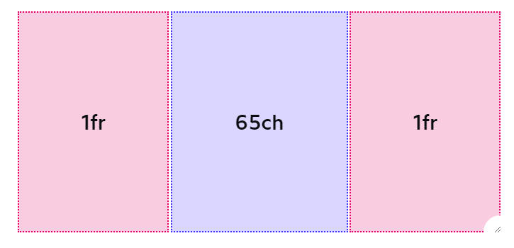

CSS Grid - How to center document
<style>
.wrapper {
display: grid;
grid-template-columns:
1fr min(65ch, 100%) 1fr;
gap: 10px;
}
.wrapper>* {
grid-column: 2;
}
.full-bleed {
width: 100%;
grid-column: 1 / 4;
}
</style>
If you're not familiar with CSS Grid, this might seem like a lot of random characters and keywords. Never
fear! All will be explained.
grid-template-columns is a property that lets us define the shape of our grid. By providing 3 discrete
values, we're indicating that we want 3 columns.
The values define the width of each column. The first column is 1fr, same as the last column. The fr unit
is a flexible unit that fills available space. It's similar in principle to flex-grow; it's a ratio of how
much of the free space the column should consume.
Our center column is a fixed width. We use the min helper to pick whichever value winds up being smaller.
On large screens, it will take up 65ch width. On smaller screens, where there isn't enough horizontal space
for 65 characters, it is clamped to 100% of the available container width.
(If you use Sass, the min keyword won't work properly, because it's already a helper in the preprocessor.
View a workaround.)
Here's what this looks like, in practice:
